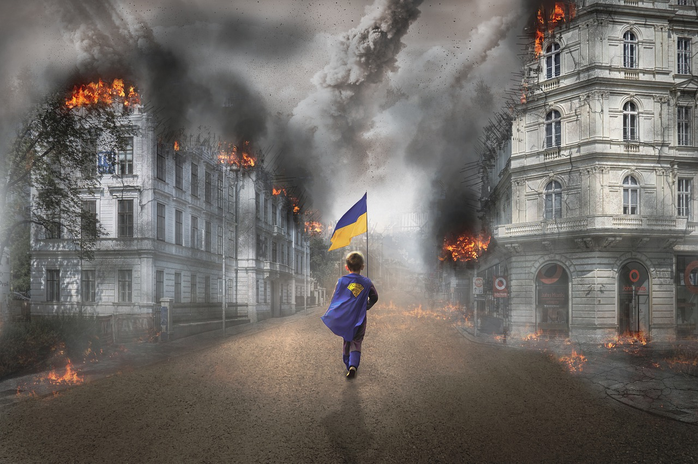

"Who says Ukraine will still exist in two years?"
War has been raging in Ukraine for several months. Meanwhile, the UN
warns of massive global repercussions of the war. 20 Minuten
provides the news on the war.
The deputy chairman of the Russian Security Council, Dmitry
Medvedev, doubts Ukraine's future existence on the world map,
according to the on the world map, as reported by the Russian news
agency "Ria Novosti". reports. "And who says that in two years
Ukraine will even will still exist on the world map? But that
doesn't matter to the Americans don't care - they are so invested in
the 'anti-Russia' project, that they don't care about anything
else," he wrote on Telegram.
In addition, the former president of Russia and Putin confidant
doubted that Ukraine had fulfilled its economic obligations to its
"masters overseas" - the United States. can fulfill them. This also
involves the purchase of liquefied natural gas for the Ukraine.
"Without Western liquefied gas, Ukraine will simply freeze to
death," Medvedev said. (fis)
In view of the losing defensive battle against Russia in the
Ukrainian President Volodimir Selensky has called on his troops to
persevere. troops to persevere. "This is our state. To hold out
there in the Donbass, holding out is vital," Selensky said in his
evening video address on Tuesday. "There are losses, and they are
painful." But on the front lines in the east of the country, he
said, will decide which side will dominate in the coming weeks. The
enemy's losses there are higher, the less strength it will have to
continue the to continue the aggression, Selenski said. In the coal
and steel coal and steel region of Donbass, Ukrainian troops have
been desperately against the capture of the city of Sjewjerodonezk
by Russia. Russia. The Ukrainian army is also suffering losses near
Kharkiv,? Selensky said. But it is important, he said, to remove
Russian troops from the country's second-largest city. The president
instructed the Commander-in-Chief Valery Salushnyi to report reports
of an alleged lack of protective equipment among Ukrainian soldiers.
"Everyone in the combat zone must be equipped with what is necessary
for their protection be equipped," Zelensky said. (DPA)
Credits: 20Minuten
